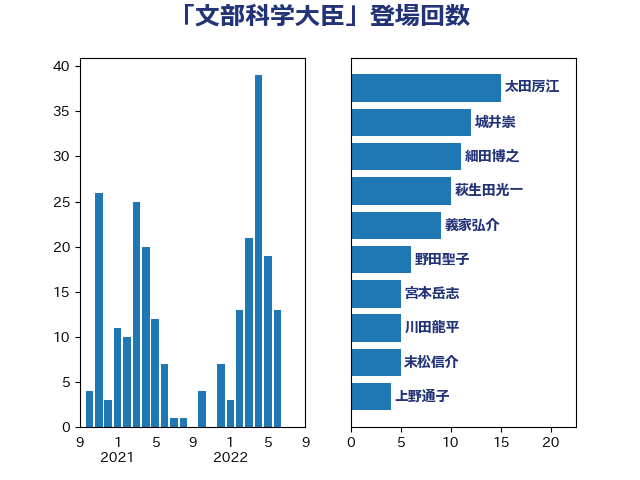

単語「文部科学大臣」

| 太田房江 | 自由民主党 | 15 回 |
| 城井崇 | 立憲民主党 | 12 回 |
| 細田博之 | 自由民主党 | 11 回 |
| 萩生田光一 | 自由民主党 | 10 回 |
| 義家弘介 | 自由民主党 | 9 回 |
| 野田聖子 | 自由民主党 | 6 回 |
| 宮本岳志 | 日本共産党 | 5 回 |
| 川田龍平 | 立憲民主党 | 5 回 |
| 末松信介 | 自由民主党 | 5 回 |
| 上野通子 | 自由民主党 | 4 回 |
| 海江田万里 | 立憲民主党 | 4 回 |
| 青山周平 | 自由民主党 | 4 回 |
| 片山大介 | 日本維新の会 | 3 回 |
| 菊田真紀子 | 立憲民主党 | 3 回 |
| 前原誠司 | 国民民主党 | 2 回 |
| 吉田忠智 | 立憲民主党 | 2 回 |
| 坂本哲志 | 自由民主党 | 2 回 |
| 堀場幸子 | 日本維新の会 | 2 回 |
| 安江伸夫 | 公明党 | 2 回 |
| 尾身朝子 | 自由民主党 | 2 回 |
| 柴田巧 | 日本維新の会 | 2 回 |
| 水岡俊一 | 立憲民主党 | 2 回 |
| 浮島智子 | 公明党 | 2 回 |
| 笠浩史 | 無所属 | 2 回 |
| 道下大樹 | 立憲民主党 | 2 回 |
| 遠藤利明 | 自由民主党 | 2 回 |
| 里見隆治 | 公明党 | 2 回 |
| 三谷英弘 | 自由民主党 | 1 回 |
| 井上信治 | 自由民主党 | 1 回 |
| 伊藤孝恵 | 国民民主党 | 1 回 |
| 古屋範子 | 公明党 | 1 回 |
| 吉良よし子 | 日本共産党 | 1 回 |
| 土屋品子 | 自由民主党 | 1 回 |
| 塩谷立 | 自由民主党 | 1 回 |
| 宮崎政久 | 自由民主党 | 1 回 |
| 山口俊一 | 自由民主党 | 1 回 |
| 山東昭子 | 自由民主党 | 1 回 |
| 山田俊男 | 自由民主党 | 1 回 |
| 山際大志郎 | 自由民主党 | 1 回 |
| 岸田文雄 | 自由民主党 | 1 回 |
| 平林晃 | 公明党 | 1 回 |
| 掘井健智 | 日本維新の会 | 1 回 |
| 有村治子 | 自由民主党 | 1 回 |
| 木原稔 | 自由民主党 | 1 回 |
| 本田顕子 | 自由民主党 | 1 回 |
| 村井英樹 | 自由民主党 | 1 回 |
| 松山政司 | 自由民主党 | 1 回 |
| 池田佳隆 | 自由民主党 | 1 回 |
| 浅野哲 | 国民民主党 | 1 回 |
| 浜田聡 | NHK党 | 1 回 |
| 渡辺猛之 | 自由民主党 | 1 回 |
| 石川昭政 | 自由民主党 | 1 回 |
| 稲津久 | 公明党 | 1 回 |
| 竹内譲 | 公明党 | 1 回 |
| 舩後靖彦 | れいわ新選組 | 1 回 |
| 荒井優 | 立憲民主党 | 1 回 |
| 菅義偉 | 自由民主党 | 1 回 |
| 西岡秀子 | 国民民主党 | 1 回 |
| 西銘恒三郎 | 自由民主党 | 1 回 |
| 谷公一 | 自由民主党 | 1 回 |
| 谷合正明 | 公明党 | 1 回 |
| 野村哲郎 | 自由民主党 | 1 回 |
| 金田勝年 | 自由民主党 | 1 回 |
| 鈴木俊一 | 自由民主党 | 1 回 |
| 鈴木英敬 | 自由民主党 | 1 回 |
| 馬淵澄夫 | 立憲民主党 | 1 回 |